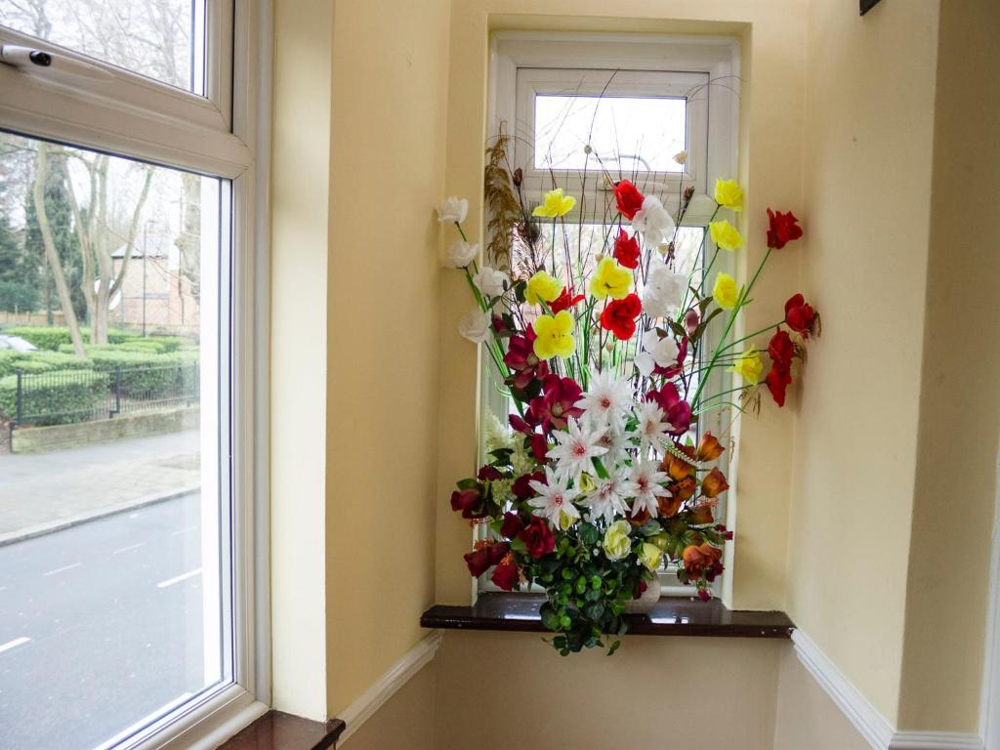
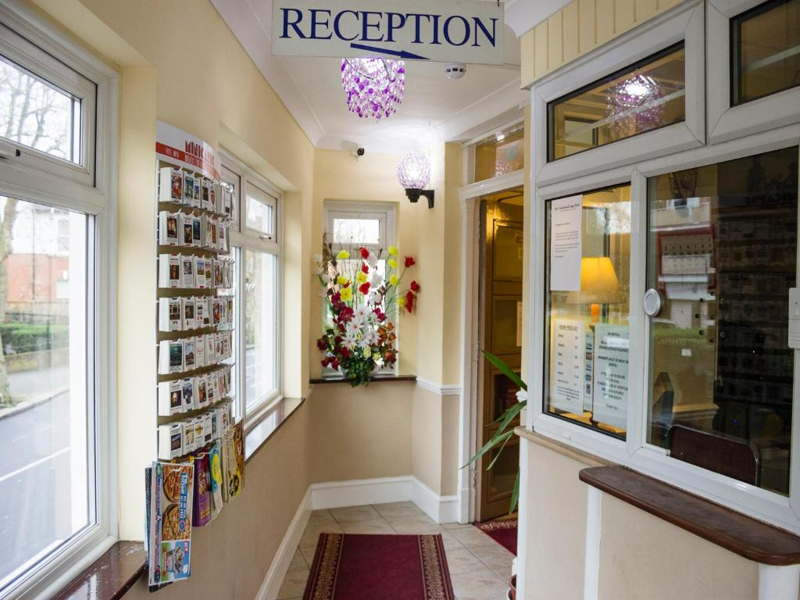

Ask reception if you need fresh or extra towels for your room.
Guest Services
Ask reception for what you need.
If you need extra towels, an iron and ironing board, a hairdryer, directions or help during your stay, speak to the staff at reception.
Reception Help
Simple support during your stay.
The reception team can help with practical guest requests, local directions, luggage storage questions and booking support.
Items are subject to availability, so please ask reception as early as possible.


Request From Staff
Useful things to ask for.
Useful before meetings, weddings, interviews or events.
Ask staff if you need a hairdryer during your stay.
The hotel can help with luggage storage questions, useful before check-in or after check-out.
Ask for help reaching Kilburn Underground, Cricklewood station, Wembley or central London.
If something is missing or unclear, speak to reception and the staff will try to help.